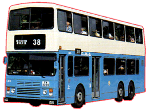

Leyland
- Olympian 11 Metre
 |
車隊編號 Model 引擎 Engine 容積 Engine Capacity 波箱 Gearbox 車身 Body Build 體積 Volume 載客量 Passenger 服役年份 Year |
:
DM 1 - 10 : Cummins LT10 (245bhp) : 10 Litres : ZF 4HP500 (4-Speed Automatic) : Walter Alexander (Type RH) : 11162L X 2500W X 4376H(mm) : U69 L40 S33 : 1993 - 2000 |
於 1993 年為數 10 部 Leyland Olympian 11m [利蘭奧林比安十一米] 非空調巴士登陸中巴，配以 Walter Alexander (Type RH) 車身 ，一款完完全全的空調巴士骨子規格只缺少了一部空調機在車尾的巴士，而車窗則可以打開，冷氣槽變成吹風機，中門更首次裝上壓力感應器。而且當康明斯引擎在沒有空調機運作壓力下，在東區走廊、柴灣長命斜、薄扶林道或東九龍走廊都尤如一部亡命小巴般高速疾走，據說走 100 km/h 以上仍綽綽有餘 (當年仍未有折油器)！本人除了乘坐過及感受過其速度之外，最深刻就在東區走廊，自己乘坐一部 DM 巴士以極速走著時，之後有一部行走 788 線的 LM 從身旁高速駛過，轉眼間絶塵而去，才會感受到人家有多快自己有多慢。
其實最初這十部巴士原意為空調巴士，但政府規限了巴士公司持有空調巴士數目，所以中巴才將訂單改為非空調版本。這批巴士所踏足路線亦相當多，可能性能和車身十一長米關係，除了太平山山頂之外，車子都輕易地穿過各條大街小巷。直至 1998 年，巴士由新巴接手，由於巴士沒有空調和年齡尚輕，新巴很快便找到買家，全數回到老家英國去繼續服役。